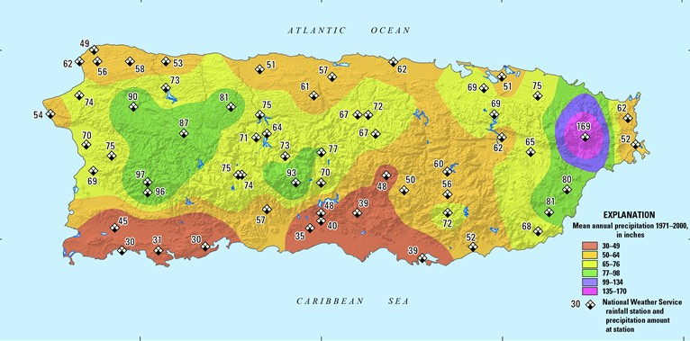
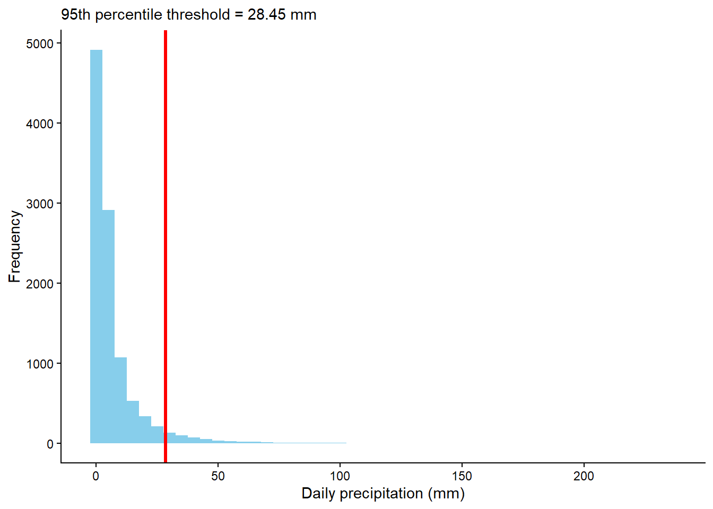
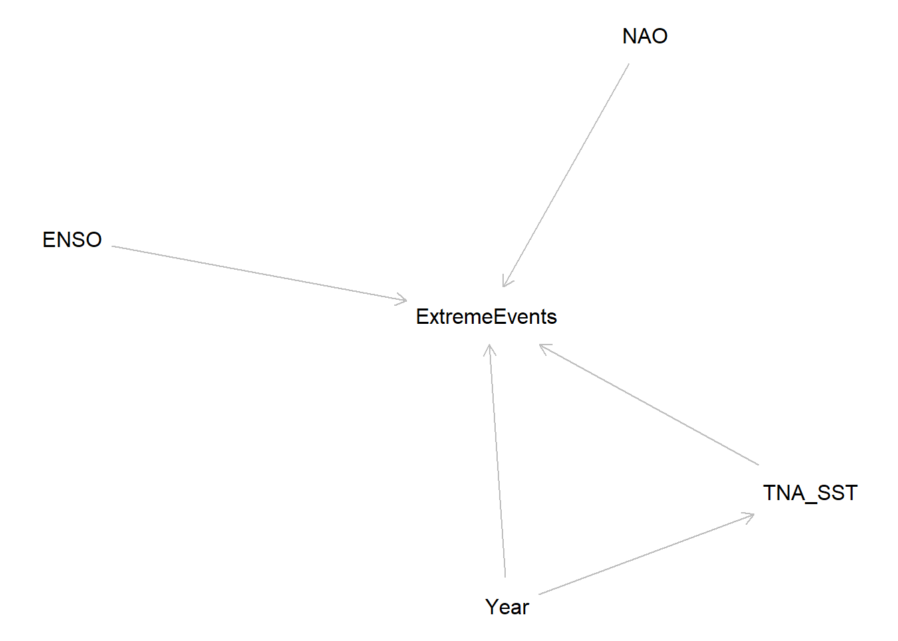
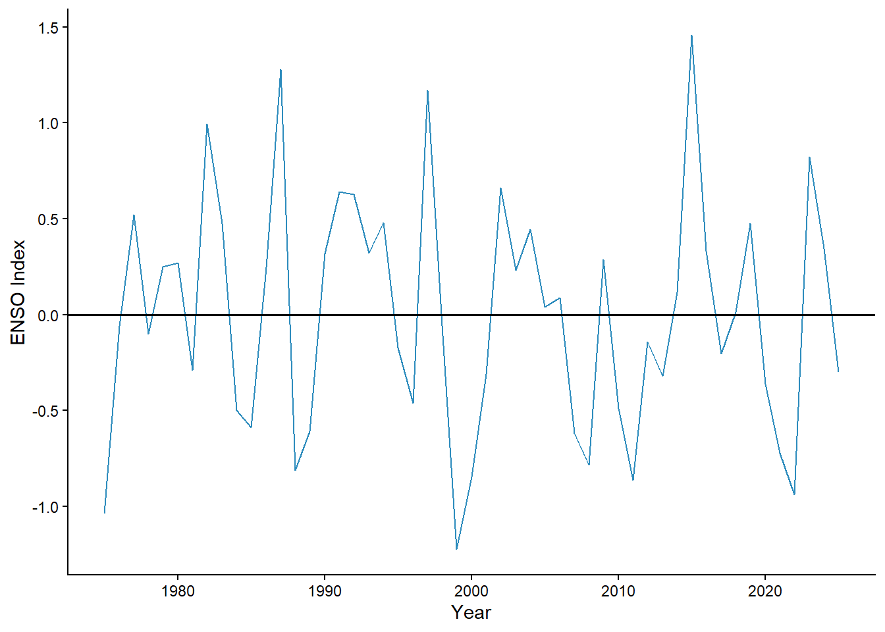
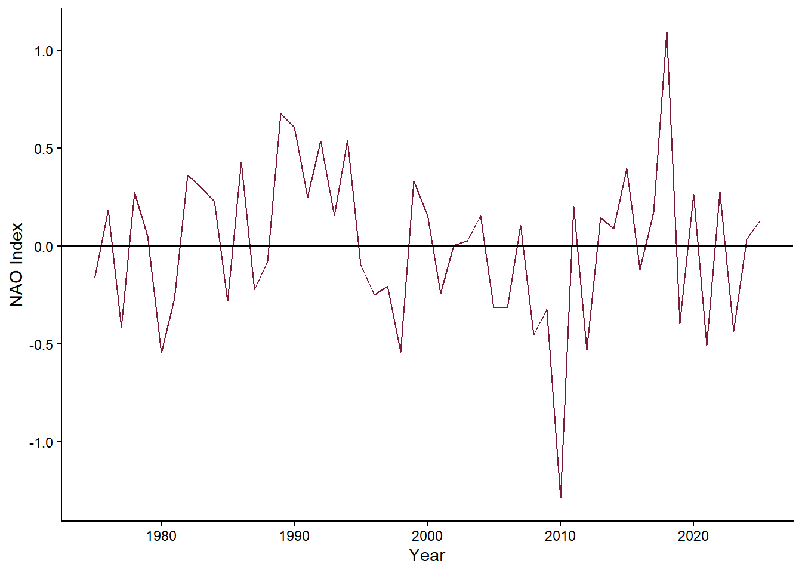
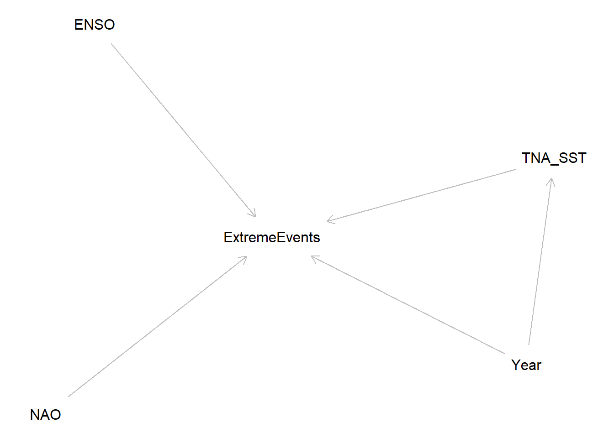
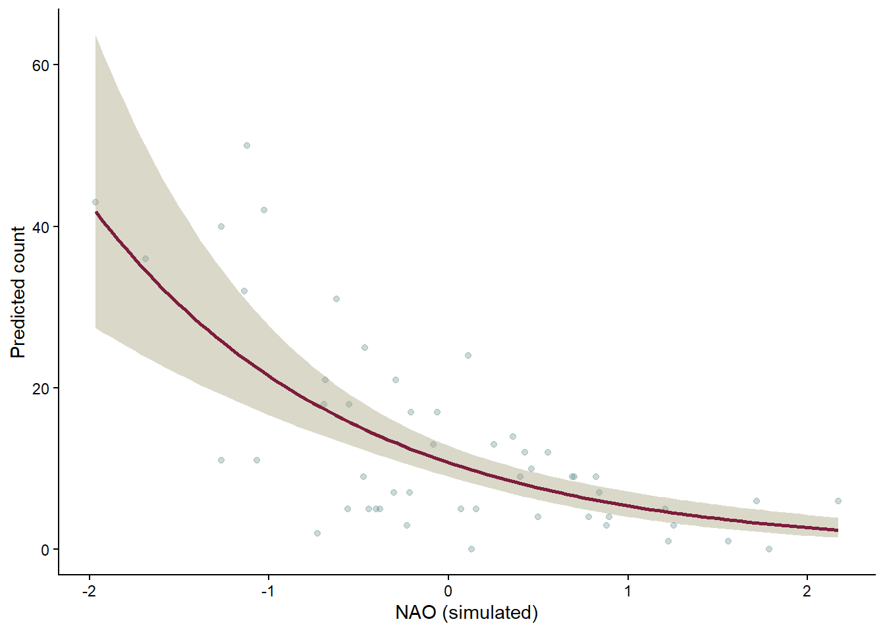
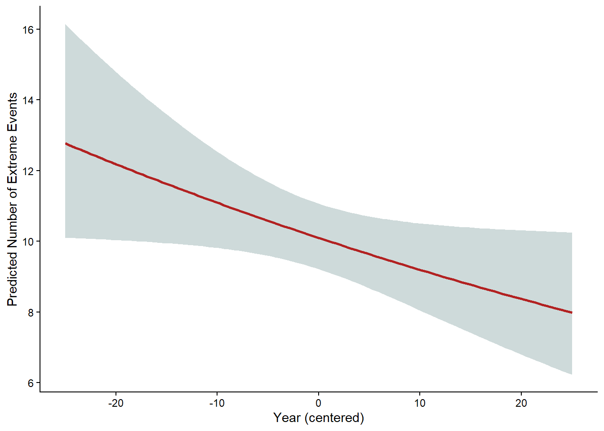

Code
# Daily Precipitation (raw data)
ggplot(precip_daily, aes(x=Date, y=`PRCP (Inches)`)) +
geom_line(alpha=.6, colour = "#2d8cbd") +
labs(x = "Year", y = "Daily Rainfall (in)") +
theme_classic()

Precipitation patterns in Puerto Rico are shaped by a combination of tropical atmospheric processes and topographic influences. As shown in U.S. Geological Survey (USGS) climatological analyses (Figure 1), pronounced orographic effects from the Cordillera Central and Sierra de Cayey create substantial spatial variability in rainfall. Trade winds carrying moisture rise along the northern windward slopes and result in the production of high precipitation totals north of the hydrologic divide, while the southern coastal plain lies within a rain shadow, resulting in considerably lower annual rainfall (USGS, 2016).
Globally, these local precipitation dynamics occur against the backdrop of broader changes in the hydrological cycle. The Intergovernmental Panel on Climate Change (IPCC, 2023) reports that globally averaged precipitation over land has likely increased since 1950, with the rate of increase accelerating after the 1980s. Human influence has likely contributed to both observed changes in precipitation patterns. The IPCC also notes that mid-latitude storm tracks have likely shifted poleward since the 1980s and affected large-scale circulation patterns that interact with tropical moisture and storm systems.
Understanding intensity of rainfall events also requires a clear definition of what constitutes an “extreme event.” According to the National Oceanic and Atmospheric Administration (NOAA, 2020), an extreme event occurs when weather or climate conditions fall near the upper or lower ends of the historical range. Although thresholds vary, scientists often classify extremes as events in the top 5–10% of historical measurements. This percentile-based definition allows for meaningful comparisons over time even as climate baselines shift.
Together, these drivers provide context for evaluating long-term changes in extreme rainfall at the San Juan Airport station. In a humid tropical island setting where orographic lifting, ocean–atmosphere interactions, and global climate variability shape precipitation, it is meaningful for climate resilience planning to assess whether extreme rainfall events have become more frequent. Motivated by these factors, this study investigates the following question: Have extreme precipitation events increased in Puerto Rico over the past 50 years?
To explore this question, I analyzed 50 years of daily precipitation data from NOAA’s weather station at the San Juan International Airport. I calculated the number of extreme precipitation events per year, using a threshold of 28.45 mm. I used a Negative Binomial model, which is well-suited for count data that show more variation than what a Poisson model can handle.
My goal is simple: Is San Juan experiencing more extreme rainfall events now compared to the 1970s?
If so, how much of this change can be explained by broader climate patterns like El Niño Southern Oscillation (ENSO) and the North Atlantic Oscillation (NAO), or changes in sea surface temperature (SST)?
The response variable in this analysis is the number of extreme precipitation events per year. This is a form of count data, and the simplest model for counts is the Poisson model. However, the Poisson model assumes that the mean and variance of the data are equal. That is not true for precipitation extremes.
Some years have many extreme events, while other years have very few. This leads to overdispersion, where the variance exceeds the mean. The Negative Binomial model adds an extra dispersion parameter that relaxes the strict Poisson assumption, making it a better fit for environmental count data. This model is especially important for events like extreme rainfall, which are influenced by seasonal cycles, climate modes, and storm activity.
This analysis uses three publicly available NOAA datasets such as daily precipitation from the San Juan International Airport (1946–2025), the ENSO index (Niño 3.4 anomaly), a measure of El Niño/La Niña conditions, and SST anomaly in from the Tropical Northern Atlantic, extracted from NOAA’s ERSSTv5 dataset.
Before fitting the statistical model, I explored the raw precipitation data to understand its distribution. Daily precipitation values were obtained from NOAA for the San Juan International Airport station from 1946–2025. Figure 2 shows the full record of daily precipitation at the San Juan International Airport from 1975 to the present. Most days receive little to no rainfall, with frequent low–to–moderate precipitation events and occasionally very high-intensity spikes above 5 inches.
# Daily Precipitation (raw data)
ggplot(precip_daily, aes(x=Date, y=`PRCP (Inches)`)) +
geom_line(alpha=.6, colour = "#2d8cbd") +
labs(x = "Year", y = "Daily Rainfall (in)") +
theme_classic()
Daily precipitation amounts from 1975–2025 exhibit a strongly right-skewed distribution, with most days receiving little to no rainfall and a long tail marked by the high-intensity events. Following NOAA’s percentile-based definition of extremes, I classified the highest 5% of daily precipitation values as extreme events. Figure 3 shows the distribution of daily rainfall with the 95th percentile threshold marked in red.
ggplot(rainy_days, aes(x = prcp_mm)) +
geom_histogram(binwidth = 5, fill = "#3a7585") +
geom_vline(xintercept = threshold, color = "#6f1631", lwd = 1.2) +
labs(subtitle = paste("95th percentile threshold =",
round(threshold, 2),
"mm"),
x = "Daily precipitation (mm)",
y = "Frequency") +
theme_classic()
Aggregating all the days above the 95th percentile threshold yielded the annual number of extreme precipitation events. Annual extremes vary substantially over time. The variance of yearly counts (20.05) exceeds the mean (10). This difference indicates overdispersion and further motivates the use of a Negative Binomial model for our analysis.
mean_events <- round(mean(extreme_events$extreme_events),2)
var_events <- round(var(extreme_events$extreme_events),2)
ggplot(extreme_events, aes(year, extreme_events)) +
geom_line(color = "#2d8cbd", linewidth = .8) +
geom_point(color = "#2d8cbd") +
labs(y = "Number of Extreme Events", x = "Year") +
theme_classic()
I also explored our predictors (ENSO, SST, and NAO) (Figure 4). Each index was aggregated to yearly averages to match the temporal scale of the response variable. The figures below demonstrate variability over time in ENSO, NAO, and Tropical North Atlantic SST over the study period.
ggplot(clim_data, aes(year, avg_enso_anom)) +
geom_line(color = "#2d8cbd") +
geom_hline(yintercept = 0, color = "black", linewidth = .6) +
labs(x = "Year", y = "ENSO Index") +
theme_classic() 
ggplot(clim_data, aes(year, avg_nao_index)) +
geom_line(color = "#7b1c37") +
geom_hline(yintercept = 0, color = "black", linewidth = .6) +
labs(x = "Year", y = "NAO Index") +
theme_classic()
ggplot(clim_data, aes(year, avg_sst)) +
geom_line(color = "#b8834f") +
geom_hline(yintercept = 0, color = "black", linewidth = .6) +
labs(x = "Year", y = "SST Anomaly (Celsius)") +
theme_classic()
dag <- dagitty("
dag {
Year
ENSO
NAO
TNA_SST
ExtremeEvents
Year -> ExtremeEvents
ENSO -> ExtremeEvents
ENSO -> TNA_SST
NAO -> ExtremeEvents
NAO -> TNA_SST
TNA_SST -> ExtremeEvents
Year -> TNA_SST
}
")
plot(dag)
The DAG (Figure 8) illustrates the hypothesized relationships among large-scale climate modes. Both ENSO and NAO are shown influencing TNA_SST to reflect their known, although variable, ability to modulate Atlantic oceanic conditions. Warmer SSTs can enhance availability of moisture in the atmosphere and convective potential, which makes SST a plausible intermediary pathway through which these climate modes affect extreme rainfall. Each of the climate drivers (ENSO, NAO, TNA_SST) in this model is allowed to independently influence precipitation extremes, which is why they were drawn with direct arrows pointing to ExtremeEvents. The arrow from Year to TNA_SST and ExtremeEvents captures the long-term climatic changes, such as anthropogenic warming, that may alter SST conditions and the frequency of heavy rainfall. No arrows connect ENSO and NAO to each other, namely to reflect the decision that these variables are treated as independent modes of climate variability in this analysis.
Simply put, this DAG describes a structural dynamic in which ENSO and NAO may affect precipitation extremes both directly and indirectly through their influence on Atlantic SST, while long-term temporal trends (Year) act as an overarching driver.
\[ Y_t \sim \text{NegativeBinomial}(\mu_t, \theta) \]
\[\begin{align} \log(\mu_t) = \beta_0 + \beta_1\,\text{Year}_t + \beta_2\,\text{ENSO}_t + \beta_3\,\text{SST}_t + \beta_4\,\text{NAO}_t \end{align}\] - \(Y_t\) is the expected number of extreme events
\(\beta_0\) is the dispersion parameter
\(\beta_1\) captures long-term trends
\(\beta_2\) captures ENSO-related variability
\(\beta_3\) captures the role of ocean temperatures in generating moisture for heavy rainfall
\(\beta_4\) captures NAO-related variability
I simulated annual extreme precipitation counts using a Negative Binomial Generalized Linear Model (GLM) with known coefficients for ENSO, NAO, SST, and an averaged year predictor to later compare the true parameter values with the estimates obtained by fitting the model back to the simulated data.
#|code-fold: false
#------------------------ Data Simulation -------------------------------
set.seed(123)
# create the year variable
years <- 1975:2025
n <- length(years)
year_ref <- years - mean(years)
# generate predictor's index values
nao <- rnorm(n, 0, 1)
enso <- rnorm(n, 0, 1)
sst <- rnorm(n, 0, 1)
# true parameter coefficients
beta0 <- 2.5
beta1 <- 0.01
beta2 <- 0.05
beta3 <- 0.3
beta4 <- -0.6
# create the linear predictor
log_mean <- beta0 + beta1*year_ref + beta2*enso + beta3*sst + beta4*nao
# mean response
mu <- exp(log_mean)
# simulate negative binomial distribution of counts for the response variable
extreme_events <- rnbinom(n, size = 3, mu = mu)
# create the dataframe
sim_data <- tibble::tibble(extreme_events,
nao,
enso,
sst,
year = years,
year_ref)To avoid extremely large values in the linear predictor, the year variable was expressed as the subtraction of its average. This transformation leaves the interpretation of the yearly trend unchanged while maintaining the numerical values in a stable range for the Negative Binomial model. I used this operation to maintain numerical stability.
ggplot(sim_data, aes(year, extreme_events)) +
geom_line(color = "darkred") +
labs(x = "Year", y = "Simulated Extreme Events") +
theme_classic()
Figure 9 presents the simulated yearly counts of extreme precipitation events generated under the Negative Binomial distribution. The series shows strong year-to-year variability, with sharp fluctuations that are expected when modeling annual extreme events. Even with these swings, the simulated values stay within a realistic range for a tropical station. The variability reflects both the randomness built into the Negative Binomial distribution and the influence of the predictor variables included in the linear predictor.
#|code-fold: true
#-------------------- Model Simulation ---------------------------------
sim_nb_model <- glm.nb(formula = extreme_events ~ year_ref +
enso + nao + sst,
data = sim_data)
broom::tidy(sim_nb_model) %>%
kable(digits = 3, caption = "Coefficient Estimates")| term | estimate | std.error | statistic | p.value |
|---|---|---|---|---|
| (Intercept) | 2.403 | 0.093 | 25.978 | 0.000 |
| year_ref | 0.011 | 0.006 | 1.759 | 0.078 |
| enso | -0.039 | 0.102 | -0.380 | 0.704 |
| nao | -0.690 | 0.105 | -6.602 | 0.000 |
| sst | 0.108 | 0.092 | 1.178 | 0.239 |
In the simulation, I assigned the following true parameter values based on the model structure \[\log(\mu_t) = \beta_0 + \beta_1\,\text{Year}_t + \beta_2\,\text{ENSO}_t + \beta_3\,\text{SST}_t + \beta_4\,\text{NAO}_t \]:
After fitting the Negative Binomial Model to the simulated data, the recovered coefficients were:
The SST and year coefficients were recovered reasonably, while the ENSO and NAO parameter coefficients differed substantially from their true values. These mismatches occur because the simulated dataset contains only 50 observations (one per year). When true effects are small, limited sample size reduces the model’s ability to recover the exact parameter values even when the model is correctly specified.
To determine whether these discrepancies were due to the small sample size, I repeated the simulation using a much larger sample.
#|code-fold: false
#-------------------- Larger simulation with repeated years --------------------
set.seed(123)
years_sim2 <- rep(1975:2025, 1000)
n_sim2 <- length(years_sim2)
# Center year
year_ref_sim2 <- years_sim2 - mean(years_sim2)
# Generate predictors
nao_sim2 <- rnorm(n_sim2, 0, 1)
enso_sim2 <- rnorm(n_sim2, 0, 1)
sst_sim2 <- rnorm(n_sim2, 0, 1)
# True parameters
beta0 <- 2.5
beta1 <- 0.01
beta2 <- 0.05
beta3 <- 0.3
beta4 <- -0.6
# Linear predictor
log_mean_sim2 <- beta0 + beta1*year_ref_sim2 + beta2*enso_sim2 +
beta3*sst_sim2 + beta4*nao_sim2
mu_sim2 <- exp(log_mean_sim2)
# Simulated counts
extreme_events_sim2 <- rnbinom(n_sim2, size = 3, mu = mu_sim2)
# Fit model
sim2_data <- tibble::tibble(extreme_events = extreme_events_sim2,
year_ref = year_ref_sim2,
enso = enso_sim2,
nao = nao_sim2,
sst = sst_sim2)
# simulate the model
sim2_nb_model <- glm.nb(extreme_events ~ year_ref + enso + nao + sst,
data = sim2_data)
# format the model summary table
broom::tidy(sim2_nb_model) %>%
kable(digits = 3, caption = "Recovered Coefficients from the Large Simulation (n ≈ 50,000)") %>%
kable_paper("hover", full_width = FALSE)| term | estimate | std.error | statistic | p.value |
|---|---|---|---|---|
| (Intercept) | 2.496 | 0.003 | 849.633 | 0 |
| year_ref | 0.010 | 0.000 | 51.878 | 0 |
| enso | 0.049 | 0.003 | 16.950 | 0 |
| nao | -0.600 | 0.003 | -201.078 | 0 |
| sst | 0.303 | 0.003 | 103.899 | 0 |
With a much larger simulated dataset (approximately 50,000 observations), the fitted model recovers the true parameter values with near-perfect accuracy. This confirms that the mismatches observed earlier were due to limited sample size rather than deficiencies in the model structure. Small effects such as the ENSO coefficient (0.05) are difficult to recover with only 50 years of observations, but are accurately estimated once the sample size is expanded. This larger simulation validates the parameter recovery process and demonstrates that the Negative Binomial model performs as expected under the assumptions used in this analysis.
#|code-fold: true
#| fig-cap: "Figure 10. Effect of NAO on Simulated Extreme Precipitation Counts"
# Create a prediction grid for NAO
pred_sim_nao <- expand_grid(nao = seq(min(sim_data$nao),
max(sim_data$nao),
length.out = 100)) %>%
mutate(enso = mean(sim_data$enso),
sst = mean(sim_data$sst),
year_ref = mean(sim_data$year_ref))
pred_sim_nao_se <- predict(sim_nb_model,
newdata = pred_sim_nao,
type = "link",
se.fit = TRUE)
# Convert link scale predictions to response scale
pred_sim_nb <- pred_sim_nao %>%
mutate(
# linear predictor (log-scale)
log_pred = pred_sim_nao_se$fit,
# 95% CI on the link (log) scale using qnorm
log_lwr = qnorm(0.025, log_pred, pred_sim_nao_se$se.fit),
log_upr = qnorm(0.975, log_pred, pred_sim_nao_se$se.fit),
# convert to response scale
pred = exp(log_pred),
pred_lwr = exp(log_lwr),
pred_upr = exp(log_upr))
# Plot
ggplot() +
# Raw data points
geom_point(data = sim_data,
aes(x = nao, y = extreme_events),
color = "#528084",
alpha = .3) +
# Confidence interval ribbon
geom_ribbon(data = pred_sim_nb,
aes(x = nao, ymin = pred_lwr, ymax = pred_upr),
fill = "#a39f79",
alpha = .4) +
# Prediction line
geom_line(data = pred_sim_nb,
aes(x = nao, y = pred),
color = "#7d1c3b",
linewidth = .9) +
labs(x = "NAO (simulated)",
y = "Predicted count") +
theme_classic()
Figure 10 illustrates how the predicted number of simulated extreme precipitation events changes across the range of NAO values while the other predictors are held at their average levels. The background points show the raw simulated data, which vary widely from year to year, while the solid line represents the model’s expected relationship. Because NAO was assigned a negative coefficient in the simulation, the predicted number of extreme events decreases as NAO increases. The shaded band shows the 95% confidence interval around the prediction, which widens toward the edges of the NAO range where fewer observations occur. Overall, this figure demonstrates that the fitted Negative Binomial model captures the general downward trend that was built into the simulated data and behaves in line with the model assumptions.
For our inferential analysis of our collected data, we have established a null and alternative hypothesis. That is:
\(H_0\): The frequency of extreme precipitation events has not changed over time.
\(H_1\): Extreme precipitation events have increased over time.
or
\(H_0: \beta_{\text{year}} = 0\)
\(H_1: \beta_{\text{year}} > 0\)
Using the processed yearly counts of extreme events and the annual values of the NAO, ENSO, and TNA SST indices, I fit the same Negative Binomial model structure used in the simulation.
#|code-fold: true
clim_model <- glm.nb(extreme_events ~ year_ref + avg_enso_anom +
avg_nao_index + avg_sst,
data = clim_data)
tidy(clim_model) %>%
kable(digits = 3, caption = "Coefficient Estimates")| term | estimate | std.error | statistic | p.value |
|---|---|---|---|---|
| (Intercept) | 2.122 | 0.069 | 30.867 | 0.000 |
| year_ref | -0.009 | 0.005 | -2.052 | 0.040 |
| avg_enso_anom | -0.208 | 0.079 | -2.648 | 0.008 |
| avg_nao_index | 0.101 | 0.137 | 0.738 | 0.461 |
| avg_sst | 0.922 | 0.206 | 4.487 | 0.000 |
After fitting the Negative Binomial model, I found that the estimated coefficient for year was –0.009 (p = 0.04), indicating only a very small decrease in the expected number of extreme events after accounting for the other predictors. The ENSO coefficient was –0.208 (p = 0.008), meaning that ENSO phases are associated with meaningful changes in extreme rainfall frequency, with El Niño–like conditions generally linked to fewer extreme events. The SST effect (0.922; p = 7.22e–6) showed the strongest relationship, supporting the idea that warmer Atlantic temperatures are associated with more extreme rainfall events in San Juan. NAO had an estimated coefficient of 0.101 (p = 0.461). The intercept (2.122; p = 2e-16) represents the expected log count of extreme precipitation events when all predictors are at their reference values. This corresponds to roughly eight extreme events per year when ENSO, NAO, and SST anomalies are zero and the year is at its mean value.
#|code-fold: true
#| fig-cap: "Figure 11. Predicted Effect of Year on Extreme Precipitation Events"
# Prediction grid for Year
pred_year <- expand_grid(
year_ref = seq(min(clim_data$year_ref),
max(clim_data$year_ref),
length.out = 100)) %>%
mutate(avg_enso_anom = mean(clim_data$avg_enso_anom, na.rm = TRUE),
avg_nao_index = mean(clim_data$avg_nao_index, na.rm = TRUE),
avg_sst = mean(clim_data$avg_sst, na.rm = TRUE))
# Predictions on link scale
pred_year_se <- predict(clim_model,
newdata = pred_year,
type = "link",
se.fit = TRUE)
pred_year_nb <- pred_year %>%
mutate(log_pred = pred_year_se$fit,
log_lwr = qnorm(0.025, log_pred, pred_year_se$se.fit),
log_upr = qnorm(0.975, log_pred, pred_year_se$se.fit),
pred = exp(log_pred),
pred_lwr = exp(log_lwr),
pred_upr = exp(log_upr))
# Plot
ggplot(pred_year_nb, aes(x = year_ref, y = pred)) +
geom_ribbon(aes(ymin = pred_lwr, ymax = pred_upr),
fill = "#5b8484", alpha = .3) +
geom_line(linewidth = 1, color = "firebrick") +
labs(x = "Year (centered)",
y = "Predicted Number of Extreme Events") +
theme_classic()
Figure 11 shows the modeled relationship between year and the expected number of extreme precipitation events in San Juan, with ENSO, NAO, and SST held at their average values. The predicted line slopes slightly downward, indicating a small decrease in extreme event frequency over the 50-year period. The confidence interval widens toward the earlier years, reflecting greater uncertainty at the edges of the dataset. Overall, the effect of year is relatively weak compared to the climate indices included in the model, and this visualization supports the conclusion that time alone does not explain changes in extreme precipitation. Instead, the variability in extremes appears to be more strongly associated with climate conditions such as ENSO and Atlantic SST rather than a simple linear trend over time.
#|code-fold: true
#| fig-cap: "Figure 12. Effect of Tropical Northern Atlantic SST on Extreme Precipitation Events"
# Prediction grid for TNA SST
pred_sst <- expand_grid(
avg_sst = seq(min(clim_data$avg_sst),
max(clim_data$avg_sst),
length.out = 100)) %>%
mutate(avg_enso_anom = mean(clim_data$avg_enso_anom, na.rm = TRUE),
avg_nao_index = mean(clim_data$avg_nao_index, na.rm = TRUE),
year_ref = mean(clim_data$year_ref, na.rm = TRUE))
# Predictions on link scale
pred_sst_se <- predict(clim_model,
newdata = pred_sst,
type = "link",
se.fit = TRUE)
pred_sst_nb <- pred_sst %>%
mutate(log_pred = pred_sst_se$fit,
log_lwr = qnorm(0.025, log_pred, pred_sst_se$se.fit),
log_upr = qnorm(0.975, log_pred, pred_sst_se$se.fit),
pred = exp(log_pred),
pred_lwr = exp(log_lwr),
pred_upr = exp(log_upr))
# Plot
ggplot(pred_sst_nb, aes(x = avg_sst, y = pred)) +
geom_ribbon(aes(ymin = pred_lwr, ymax = pred_upr),
fill = "#5b8484", alpha = .3) +
geom_line(linewidth = 1, color = "firebrick") +
labs(x = "Tropical Atlantic Sea Surface Temperature (Celsius)",
y = "Predicted Number of Extreme Events") +
theme_classic()
Figure 12 illustrates the modeled relationship between Tropical Atlantic sea surface temperature (SST) anomalies and the expected number of extreme precipitation events in San Juan. As SST increases, the predicted count of extreme events rises sharply and the uncertainty band widens at higher temperatures. This pattern suggests that warmer Atlantic conditions are associated with a greater likelihood of extreme rainfall.
Although the year variable itself did not show a positive linear trend, the model results point to a more nuanced picture. ENSO anomalies and Atlantic SSTs were both significant predictors of extreme precipitation frequency, indicating that large-scale climate variability plays a key role in shaping extreme rainfall in San Juan. This suggests that changes in extreme precipitation cannot be attributed to time alone, but instead emerge from the combined influence of warming Atlantic waters and shifts in El Niño/La Niña conditions. The model therefore highlights that the frequency of extremes is tied to climate dynamics rather than a simple linear trend over the past 50 years.
Several limitations should be considered when interpreting these findings. Extreme precipitation in the Caribbean is strongly influenced by tropical cyclone activity, yet hurricane frequency and intensity were not included in the model and could confound the observed associations. Other large-scale climate modes, such as the Atlantic Multidecadal Oscillation (AMO) or the Madden–Julian Oscillation (MJO) may also shape rainfall extremes and interact with ENSO and SST in ways not captured here. Additionally, the negative coefficient for year may reflect the model’s inability to capture nonlinear or regime-based changes in precipitation patterns. Finally, the definition of extreme events is dependent on a threshold. Different thresholds could yield different trends.
Future work could expand this analysis by incorporating storm-specific data, including annual tropical cyclone counts to better capture the influence of hurricane activity on extreme precipitation. The model does not incorporate lagged climate effects, even though variables like ENSO and SST often influence precipitation with delays of several months, so a model that incorporates that factor may likely gain even more insights in the temporal dynamics that shape extreme rainfall in Puerto Rico. Finally, a spatial extension of this analysis using additional weather stations across the island would also help assess whether the patterns observed at the San Juan International Airport station are consistent regionally.
As a graduate student in Environmental Data Science, my goal in this analysis is not to produce a full atmospheric attribution study, but to demonstrate how statistical tools can be applied to explore relationships between climate indices and extreme precipitation. ENSO, NAO, and Tropical North Atlantic SSTs were selected because they are widely used indicators of large-scale climate variability, and their definitions are well documented in NOAA datasets. While I am not an atmospheric scientist, the purpose of this model is to illustrate how these indices can be incorporated into a statistical framework, interpreted, and contextualized within broader climate processes. The results therefore reflect an introductory, data-driven perspective rather than a definitive climatological explanation.
Daily precipitation data for San Juan, Puerto Rico, were obtained from the NOAA National Centers for Environmental Information through the GHCN‑Daily archive for the San Juan International Airport station.
Large‑scale climate variability was represented using three NOAA climate indices. Atlantic sea‑surface temperature anomalies were taken from the Tropical North Atlantic (TNA) index provided by the NOAA Physical Sciences Laboratory.
ENSO conditions were characterized using the Oceanic Niño Index (ONI) from the NOAA Climate Prediction Center.
North Atlantic atmospheric variability was captured using the CPC’s monthly NAO index
Calvin, K., Dasgupta, D., Krinner, G., Mukherji, A., Thorne, P. W., Trisos, C., … & Orendain, D. J. (2023). IPCC, 2023: Climate Change 2023: Synthesis Report. Contribution of Working Groups I, II and III to the Sixth Assessment Report of the Intergovernmental Panel on Climate Change [Core Writing Team, H. Lee and J. Romero (eds.)]. IPCC, Geneva, Switzerland.
Caribbean-Florida Water Science Center (CFWSC). Climate of Puerto Rico.* U.S. Geological Survey. (2016). Retrieved from www.usgs.gov website: https://www.usgs.gov/centers/cfwsc/science/climate-puerto-rico
Herring, D. (2020, October 29). What is an “extreme event”? Is there evidence that global warming has caused or contributed to any particular extreme event? | NOAA Climate.gov. Retrieved from www.climate.gov website: https://www.climate.gov/news-features/climate-qa/what-extreme-event-there-evidence-global-warming-has-caused-or-contributed
@online{moreno_rolón2025,
author = {Moreno Rolón and Moreno Rolón, Melannie},
title = {Temporal {Trends} in the {Frequency} of {Extreme}
{Precipitation} {Events} at {San} {Juan} {Int’l} {Airport,} {Puerto}
{Rico}},
date = {2025-12-11},
url = {https://mmorenorolon.github.io/posts/2025-12-02-climate-variability/},
langid = {en}
}